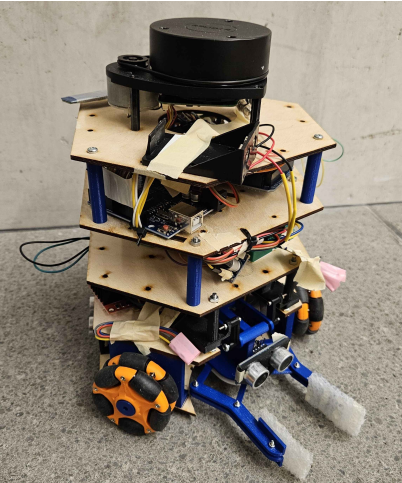
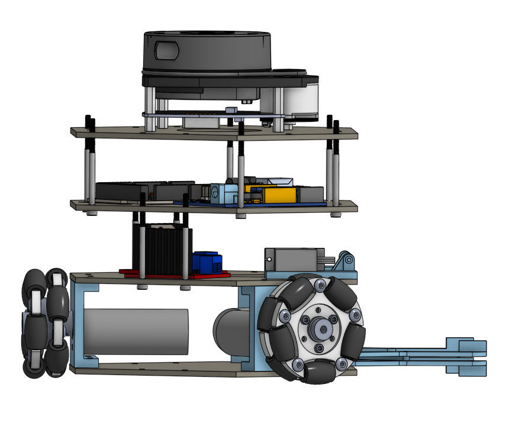
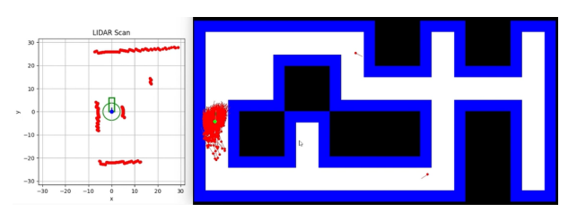

This project was a semester-long design and build of an autonomous rover for a maze challenge with three staged milestones: obstacle avoidance in a known maze, localization and navigation from an arbitrary starting pose, and pickup plus delivery of a block to a designated drop-off zone within a five-minute run window. The final platform combined a compact kiwi-drive chassis, top-mounted 2D LiDAR, dual-microcontroller embedded architecture, and a retractable gripper, with the full system iterated through repeated electrical, mechanical, and software redesigns as the milestones increased in complexity.

Add rover hardware image
Add LiDAR or localization screenshotLeft: Fully assembled rover · Right: CAD model showing side of rover with LiDAR and gripper
Technical Architecture
The rover was designed around a three-wheel kiwi drivetrain to allow holonomic motion while keeping the footprint small enough for tight 1 ft × 1 ft maze cells. That geometry simplified point turns, lateral corrections, and fine alignment in constrained corridors, while the vertically stacked chassis kept the LiDAR high for unobstructed 360° scans and preserved room for wiring, controllers, and the manipulator. A retractable arm and parallel gripper were integrated into the lower structure so the robot could transport a block without significantly increasing its turning radius or destabilizing the chassis.
The control system was intentionally divided across two microcontrollers. An Arduino Uno handled low-level drivetrain and encoder-related work, while an Arduino Mega managed Bluetooth communication, LiDAR integration, and higher-level subsystem coordination. This separation reduced timing conflicts between motion control and communications, and it became especially useful once the robot had to support encoders, LiDAR, servos, and multiple message pathways at the same time.
For localization, the rover used a Monte Carlo particle filter driven by wheel-encoder motion updates and full 360° LiDAR scans. The particle set was refined by comparing real sensor readings against reference scans from the known maze, and the software evolved from using absolute range comparisons to normalized LiDAR similarity measures after early mismatches prevented convergence. The final operator workflow paired this localization estimate with a custom LiDAR visualization, making non-line-of-sight navigation practical even when full autonomy was not completed.

Milestones
In the first milestone, the rover was driven by Bluetooth under direct human line-of-sight with the goal of navigating a known maze quickly and cleanly. The drivetrain firmware was built in C using PlatformIO, with a lightweight communications protocol forwarding commands through the Mega and into the Uno-based motor control layer. The rover performed strongly here: the compact kiwi drive made the robot nimble in corners, the manual controls were responsive, and an automatic halt feature stopped the motors if no new command was received within 100 ms.
The second milestone added LiDAR and encoders so the rover could estimate its pose from an arbitrary start state and navigate without direct visual contact. This required a much more sophisticated communication interface, controller hierarchy, and task scheduling structure across the two Arduinos. While the firmware and sensing pipeline were largely in place, the first localization approach struggled because the provided reference LiDAR data did not align cleanly with measured distances, and intermittent Bluetooth and LiDAR brownouts repeatedly disrupted runs before the localization pipeline could be demonstrated reliably.
The final milestone combined localization, navigation, and manipulation. The team redesigned the localization update to compare normalized rather than absolute LiDAR readings, which made the particle filter converge much more reliably across the maze. A two-servo gripper assembly then enabled pickup, lift, and drop-off of the block, although full autonomous block detection was not completed because ground-level sensing and power stability issues remained too fragile to trust during the final integration push.
The most important systems lesson from the project was that successful integration depended less on any one algorithm than on whether the electrical, communications, and mechanical subsystems were stable enough to support repeatable testing.
Implementation Details
One of the strongest parts of the rover was its modular programming architecture. Each microcontroller ran a Taskmaster loop that polled communications, dispatched incoming messages to the correct controller, executed local control logic, and returned outgoing responses. That structure made it straightforward to add new controllers for the LiDAR, encoders, drivetrain, gripper, and ultrasonic sensors without rewriting the full codebase each time, and it also made subsystem-level debugging much easier when behavior failed during integration.
The drivetrain used explicit forward and inverse kinematics for the three-wheel kiwi geometry, allowing both manual and partially automated motion commands to be translated into wheel-level targets. A PID-based control interface was later developed for commands of the form \(dx, dy, d heta\), but hardware variability made it extremely difficult to tune. In practice, inconsistent motor deadbands, wheel slip, and battery-dependent behavior often made the mathematically correct controller behave unpredictably in the maze, especially in narrow corridors where small tracking errors quickly became collisions.
The gripper was one of the most successful mechanical subsystems. The wrist used a synchronized linkage driven by a micro-servo to close symmetrically on the block, while the arm lifted the wrist using a parallel linkage that kept the gripper approximately level during transport. Padding was added at the gripper interface to increase friction and reduce dropped blocks, and despite some limitations in arm travel caused by nearby encoders and wiring, the manipulator reliably grasped, lifted, and delivered the object during testing.
Challenges & What I Learned
The most persistent weakness in the rover was power distribution. As more components were added across milestones — motors, LiDAR, Bluetooth, encoders, and servos — the system became vulnerable to intermittent brownouts and communication failures that could mask unrelated issues elsewhere in the stack. The team iterated through multiple regulator and battery arrangements to isolate critical components, eventually stabilizing the platform enough for a successful integrated run, but electrical fragility remained the main bottleneck throughout the project.
Several control and estimation modules were sound in principle, yet real-world hardware variability repeatedly limited their usefulness. Differences between motors, encoder drift, wheel slip, changing battery conditions, and the tight physical packaging of the robot all made tuning much harder than the equations alone suggested. This project reinforced how quickly embedded autonomy becomes a systems-engineering problem rather than a purely algorithmic one.
Three design decisions stood out as especially strong. First, the small kiwi-drive chassis gave the rover enough maneuverability to work in a tightly constrained maze. Second, the modular firmware architecture made it possible to add functionality without losing control of the codebase. Third, the gripper was well-scoped mechanically and integrated more cleanly than many of the other subsystems, making it the most reliable part of the final rover behavior.
Results
By the end of the course, the rover was able to demonstrate all core functions required by the project: manual obstacle avoidance, LiDAR-assisted localization, navigation to a target region, and block pickup plus delivery to the drop-off zone. The final integrated run still depended on a practical, human-in-the-loop control strategy rather than the fully autonomous state-driven behavior originally envisioned, but the robot successfully completed the mission with minimal intervention and no required power cycle during the successful final attempt.
In hindsight, the biggest improvement opportunity would have been earlier resolution of power distribution and hardware consistency issues. With a more reliable electrical foundation, much more of the work on automated state management, sensor fusion, and block detection could have been deployed instead of remaining partially implemented. Even so, the project was a strong exercise in embedded robotics integration and in balancing mechanical, electrical, and software tradeoffs under real deadline pressure.